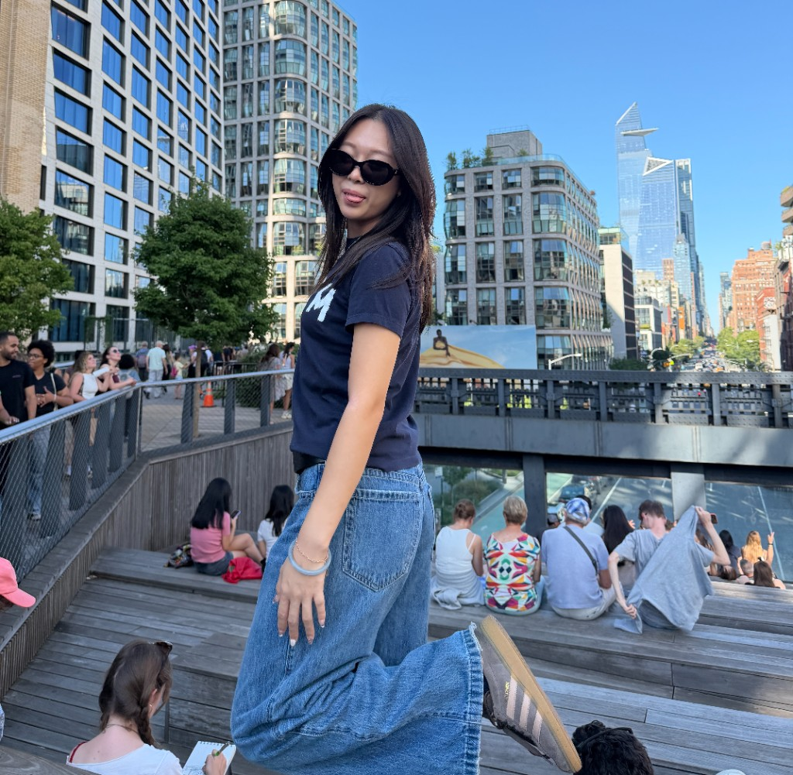

Nice to meet you!
This is who I am.
"Good design is one step shorter than you expect."

I'm currently pursuing a master's at Pratt Institute, focusing on Information Experience Design (IXD). During my undergraduate at Lehigh University, I did a Bachelor of Arts in Design (Graphic and Product Design) with a minor in marketing. Originally from Ulsan, South Korea, I bring multicultural perspectives to my work and strive to create thoughtful, people-centered design.
My design journey began when I was introduced to the concept of inclusive design. Since then, I've been passionate about creating solutions that are not only visually compelling but also accessible and meaningful for diverse audiences. I enjoy the process of designing for people — understanding their needs, behaviors, and experiences — and translating that into designs that balance creativity, functionality, and impact.
Outside of design, I love animals, cooking and experimenting with new recipes, traveling around the world, taking pictures, and discovering new music. These interests often fuel my creativity and shape how I approach design projects.
Skills: Adobe Illustrator, Adobe InDesign, Adobe Photoshop, Adobe Firefly, Adobe Dimension, HTML, Fusion 360, Rhino 3D, Canva, Figma, and Procreate
Certified in Wood-working, Metal-working, 3D printing, and Laser cutting
Language: Fluent in Korean and English, and Intermediate in Chinese